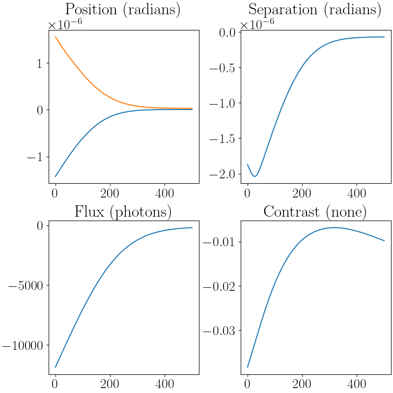

Gradient descent
Gradient Descent
The current plan for the extraction pipeline is to use gradient descent to
find the starting state for Hamiltonian Monte Carlo (HMC). In this notebook,
we cover a simple, low parameter optimisation using optax.
import jax
import jax.numpy as np
import jax.lax as jl
import jax.random as jr
import toliman
import toliman.constants as const
import toliman.math as math
import matplotlib as mpl
import matplotlib.pyplot as plt
import tqdm.notebook as tqdm
import dLux
import optax
import equinox
import os
Next, we organise the housekeeping; i.e. collecting true values, setting
the working directory and chosing graphics. The working directory needs
to be set in the directory that contains .assets or where-ever you told
toliman to install the datafiles.
mpl.rcParams["text.usetex"] = True
mpl.rcParams["font.family"] = "serif"
mpl.rcParams["font.serif"] = "Times New Roman"
mpl.rcParams["font.size"] = 20.0
mpl.rcParams["image.cmap"] = "inferno"
true_separation: float = const.get_const_as_type("ALPHA_CENTAURI_SEPARATION", float)
true_position: float = const.get_const_as_type("ALPHA_CENTAURI_POSITION", np.ndarray)
true_pixel_scale: float = const.get_const_as_type("TOLIMAN_DETECTOR_PIXEL_SIZE", float)
true_flux: float = const.get_const_as_type("ALPHA_CENTAURI_MEAN_FLUX", float)
true_contrast: float = const.get_const_as_type("ALPHA_CENTAURI_CONTRAST", float)
os.chdir("..") # Specific for our installation.
Now we can create our model. Since, this is an example, we are keeping things
simple and just simulating the physical telescope and the mask without
adding zernike polyomials. Since, we are not trying to learn the positions
etc., of the pupil we will set it to static using the operate_in_static_mode
flag. This is much faster than using a dynamic pupil.
model: object = dLux.Instrument(
optics = toliman.TolimanOptics(operate_in_static_mode = True),
detector = toliman.TolimanDetector(),
sources = [toliman.AlphaCentauri(), toliman.Background(number_of_bg_stars = 5)]
)
Note
Be careful with the background stars. Although we tried to get a "typical" sample using the Gaia database, we had trouble working out the relative brightness. Gaia does not cope that well with bright stars so it very much underestimated the brightness of Alpha Centarui. We had a rather commical hole in the field of stars where Alpha Centarui was but a low brightness for the actual star. We have used this value so make sure that you manually check the PSF and adjust the brighness of the background stars if you think it is necessary. This can be done using:
model.set("MultiPointSource.flux", model.get("MutliPointSource.flux") * ...)
Now let's simulate some data and plot the results.
psf: float = model.model()
data: float = math.simulate_data(psf, 1)
def im_and_cbar(figure: object, image: float, pos: int, title: str, naxes: int) -> object:
cbar_pad: float = 0.05
cbar_width: float = 0.0125
width: float = 1.0 / naxes - cbar_pad
disp: float = cbar_pad / 2.0 * naxes
height: float = 1.0 - 2.0 * disp
corner: float = float(pos) / float(naxes)
im_ax: object = figure.add_axes([corner, disp, width, height])
cbar_ax: object = figure.add_axes([corner + width, disp, cbar_width, height])
im_cmap: object = im_ax.imshow(image)
im_cbar: object = figure.colorbar(im_cmap, cax = cbar_ax)
im_xticks: object = im_ax.axis("off")
im_title: object = im_ax.set_title(title)
return figure
scale: float = 5.0
naxes: int = 3
figure: object = plt.figure(figsize = (naxes * scale, scale))
figure: object = im_and_cbar(figure, psf, 1, "PSF", 3)
figure: object = im_and_cbar(figure, data, 2, "Data", 3)
figure: object = im_and_cbar(figure, data - psf, 3, "Residuals", 3)

We are interested in the parameters of the Alpha Centauri object ignoring the field angle. However, we do not want to use the model we used to generate the data to perform the gradient descent. Instead we want to perturb the relevant parameters a little. I generated my perturbations by considering how well the results could be eyeballed. I thought I could probably get the position to within a pixel each way and then for the sake of completeness assumed a gaussian error. Separation, contrast and flux followed similar reasoning.
Note
We are ignoring the field angle to match the HMC example.
Tip
The params variable is a set of paths that Zodiax can use to
access/update the parameters of the model. The perturbations
are the changes that we want to apply in the same order. It is
easy to loose track of which element of the list references which
parameter and my solution to this problem is to define constants
that I can use for indexing. For example,
data: list = ["fish", "mamal", "bird"]
FISH: int = 0
MAMAL: int = 1
BIRD: int = 2
data[FISH] = "fish"
data[MAMAL] = "mamal"
This only works while the list is not changed. If someone were to mutate the list then your indexing would break.
params: list = [
"BinarySource.position",
"BinarySource.separation",
"BinarySource.flux",
"BinarySource.contrast"
]
perturbations: list = [
true_pixel_scale * jr.normal(jr.PRNGKey(0), (2,)),
5 * true_pixel_scale * jr.normal(jr.PRNGKey(0), ()),
0.1 * true_flux * jr.normal(jr.PRNGKey(1), ()),
0.1 * true_contrast * jr.normal(jr.PRNGKey(2), ()),
]
optimizers: list = [
optax.adam(learning_rate = 0.005 * true_pixel_scale),
optax.adam(learning_rate = 0.005 * true_pixel_scale),
optax.adam(learning_rate = 0.0005 * true_flux),
optax.adam(learning_rate = 0.0001 * true_contrast),
]
POSITION: tuple = (0, 1)
SEPARATION: int = 2
FLUX: int = 3
CONTRAST: int = 4
You may notice that my constants don't quite make sense and that is
because position counts as an x and a y parameter. We will see
this is useful later in indexing arrays.
Tip
jax arrays can be indexed by tuples.
Example
>>> import jax.numpy as np
>>> arr: float = np.zeros((5, 5), dtype = float)
>>> arr[:, (0, 1)].shape
::: (5, 2)
Now let's define the loss function. In this case I am doing a simple
chi-squared loss. I would recommend using a different syntax for the
code, I just got carried away telling the computer what to do instead
of focussing on the science. The important things to take note of are
model.get_args and equinox.filter_value_and_grad and equinox.filter_jit.
Tip
equinox.filter_jit will mark all the parts of the model that jax
would break on as static preventing compilation errors.
`equinox.
@equinox.filter_jit
@equinox.filter_value_and_grad(arg = model.get_args(paths = params))
def eval_loss(model: object, data: float) -> float:
psf: float = model.model()
res: float = psf - data
sq_err: float = jl.integer_pow(res, 2)
loss: float = jl.reduce(sq_err, 0.0, jl.add, (0, 1))
return loss
Finally, we can set up the gradient descent loop. First we add our perturbations
to the model using the zodiax add syntax. Then we use the zodiax
get_optimiser syntax to generate the appropriate optax.optim object.
Since I am interested in the first and last state of the model I make an
implicit copy of the initial state that I will use in the learning model.
Finally, we set up the residuals from the known global minimum as an array.
perturbed_model: object = model.add(params, perturbations)
optimizer, opt_state = perturbed_model.get_optimiser(params, optimizers)
learning_model: object = perturbed_model # Implicit copy
full_residuals: float = np.hstack(learning_model.get(params)) - np.hstack(model.get(params))
Now we run the learning loop for 500 iterations and collect the residuals
at each epoch. We are interested in the residuals so that we can analyse our
choice of learning rate. The updates are applied using the
equinox.apply_updates function.
with tqdm.tqdm(range(500)) as t:
for i in t:
# calculate the loss and gradient
loss, grads = eval_loss(learning_model, data)
# apply the update
updates, opt_state = optimizer.update(grads, opt_state)
learning_model: object = equinox.apply_updates(learning_model, updates)
residuals: float = np.hstack(learning_model.get(params)) - np.hstack(model.get(params))
full_residuals: float = np.vstack([full_residuals, residuals])
t.set_description('Loss %.5f' % (loss)) # update the progress bar
Finally, let's check our learning rates by plotting the residuals.
Tip
Your learning rate should be a small percentage of the perturbation' from the true value. Obviously in practice you don't know what the the perturbation is, but one can assume that it is a small percentage of the true value. If the residuals "bounce" around then the learning rate is likely too high.
epochs: float = np.arange(full_residuals.shape[0])
figure: object = plt.figure(figsize=(8, 8), constrained_layout=True)
axes: object = figure.subplots(2, 2)
axes[0][0].plot(epochs, full_residuals[:, POSITION])
axes[0][0].set_title("Position (radians)")
axes[0][1].plot(epochs, full_residuals[:, SEPARATION])
axes[0][1].set_title("Separation (radians)")
axes[1][0].plot(epochs, full_residuals[:, FLUX])
axes[1][0].set_title("Flux (photons)")
axes[1][1].plot(epochs, full_residuals[:, CONTRAST])
axes[1][1].set_title("Contrast (none)")
